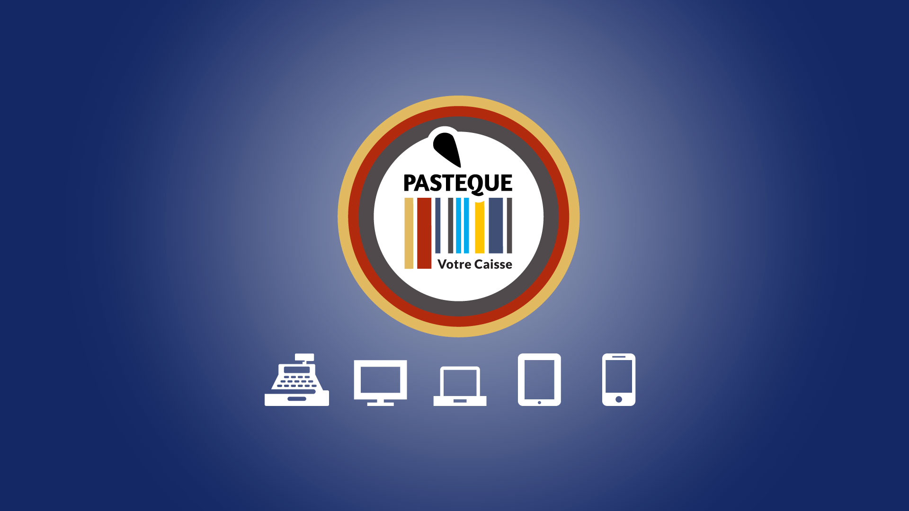
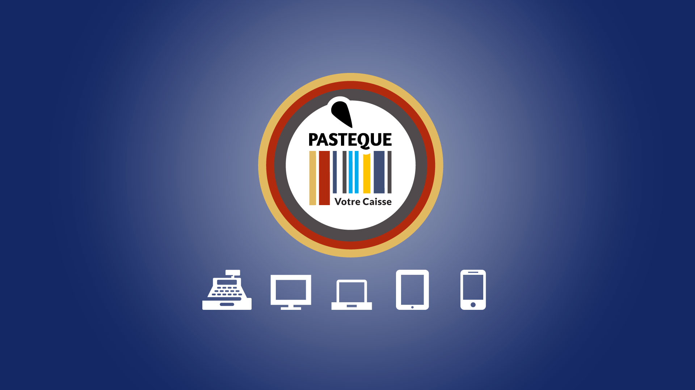

Bienvenue
Pastèque est un logiciel libre de caisse enregistreuse. Il est simple à prendre en main et rapide pour réaliser un encaissement
Le logiciel est développé à Lille par une communauté regroupant passionnés, commerçants et professionnels.

Pastèque est un logiciel libre de caisse enregistreuse. Il est simple à prendre en main et rapide pour réaliser un encaissement
Le logiciel est développé à Lille par une communauté regroupant passionnés, commerçants et professionnels.
